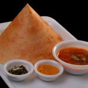
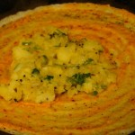
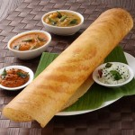
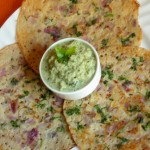
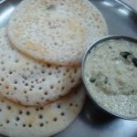

DOSA
A dosa is a cooked flat thin layered rice batter, originating from the Indian subcontinent, made from a fermented batter.
It is somewhat similar to a crepe in appearance. Its main ingredients are rice and black gram ground together in a fine, smooth batter with a dash of salt.
Dosas are a typical part of the Southern Indian and Sri Lankan Tamil diets, but the dish is now popular all over the Indian subcontinent.
Traditionally, dosas are served hot along with sambar, a stuffing of potatoes, and chutney.
They can be consumed with idli podi as well.
SERVING
Dosa can be stuffed with fillings of vegetables and sauces to make a quick meal. They are typically served with a vegetarian side dish which varies according to regional and personal preferences. Common side items are:
Sambar
Chutney: examples include coconut chutney (a semi-solid paste made up of coconut, dal (lentils), green chilli and mint or coriander)
There are varieties of chutney served along with Dosa[13]
Idli podi or milagaipodi (in Tamil): a powder of chilli with spices and sometimes desiccated coconut, mixed with sesame oil or groundnut oil or ghee
Indian pickles
TYPES OF DOSA
1. Plain Dosa
The basic and simple form of dosa, plain dosa is prepared by mixing rice, dhal and dana methi. It is not peppery, but yet tasty. It is generally rolled in a cone form and complemented with side dishes. Though simple, the taste of plain dosa is so delicious and priceless that it is very hard to stop at one.

2. Masala Dosa
Masala dosa is a completely addictive and the most common among South Indian breakfast recipes. Dosa is sprinkled with a mixture of podi (powder made of dry spices) and ghee/butter. The mixture is spread all over the dosa and served with potato masala. It’s also enjoyed with sambar and a colorful array of chutneys.

3. Paper Dosa
Paper dosa is a very thin (paper thin) and super-crunchy form of dosa which is prepared without any masala filling. It is the longest form of dosa which can serve more than one. One of the most popular breakfast recipes in restaurants, paper dosa is generally eaten plain with sambar or stuffed with spiced potato curry.

4. Onion Dosa
Onion dosa is a staple food of South India. It is one of the most ordered breakfast recipes at any restaurant. The succulent and juicy onions lend a sweet tinge, while the green chilies added to the batter gives an intense and spicy flavor to the recipe.

5. Set Dosa
Set dosa is one of the famous types of dosa from Karnataka. This spongy, soft and thick dosa is usually served in a set of 3, along with delicious saagu (vegetable curry) and chutney. It’s one of the balanced and stomach filling meals that can be eaten for breakfast, lunch or snacks time.
